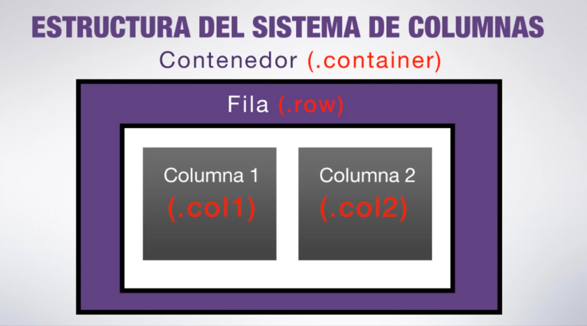
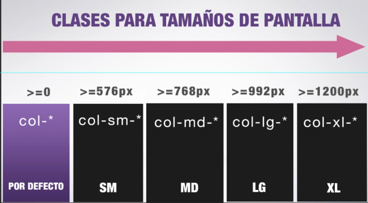

Clase 2: Dominando el sistema de columnas
La biblia perdida de Bootstrap 4 - Erick Mines
Entendiendo el sistema de columnas
- El sistema de columnas es el elemento más importante de Bootstrap y permite distribuir elementos en diversas columnas
- Está basado en flexbox, lo que permite alinear los elementos de forma vertical y horizontal
- Bootstrap 4 es mobile first y el sistema de columnas está optimizado para trabajar primero con pantallas pequeñas y luego ir adaptándolas a pantallas más grandes (tablets, desktop, televisores, etc)
Regla 1: 3 elementos conforman el sistema: un contenedor, las filas y columnas

- Para crear el sistema de columnas se puede usar cualquier etiqueta (section, article, etc) pero se suele usar div ya que son etiquetas contenedoras que no transmiten significado semántico
- En primer lugar se coloca la clase .container al div contenedor
- Dentro del .container se crea un div con la clase .row
- Dentro de la .row creamos las columnas que vamos a utilizar con la clase .col
Regla 2: Hay 2 tipos de contenedores
- .container: define un contenedor que ocupa un 80 a 90% del ancho del navegador
- .container-fluid: define un contenedor que ocupa todo el ancho de la ventana del navegador
- En pantallas pequeñas tanto .container como .container-fluid ocupan el 100% del ancho del navegador
Regla 3: Las filas tienen que ser hijas directas del contenedor
- Podemos tener otros elementos dentro del contenedor, como un titular
- Si las filas no son hijas directas del contenedor, el sistema de grillas no funcionará
- Podemos tener más de una fila por contenedor
Regla 4: Las columnas tienen que ser hijas directas de una fila
- Podemos incluir un elemento (como un titular) como hijo directo de un contenedor. Esto no funciona con las filas
- Dentro de una fila no puede ir ningún tipo de contenido. El contenido siempre debe ir dentro de las columnas
Regla 5: Una fila puede tener 12 columnas como máximo
Al asignar la clase .col, asignamos un número que corresponde a la cantidad de columnas que va a ocupar (.col-12 para 12 columnas, .col-6 para 6 columnas, etc)
Regla 6: Si superamos las 12 columnas por fila, las siguientes saltarán abajo formando una nueva fila
Regla 7: El contenido tiene que ir dentro de las columnas
No podemos crear contenido a la altura de las columnas. Dentro de .row Bootstrap está esperando que creemos .col. Si colocamos cualquier otro elemento (h2, p, etc) se va a romper la grilla
Regla 8: La clase .col nos permite crear columnas de proporciones idénticas
- La clase .col distribuye de forma idéntica las columnas en una fila
- Las columnas planteadas así se adaptan al contenido. Si una de las columnas tiene mayor contenido, el resto de las columnas se va a dividir de forma equitativa el espacio disponible restante
Regla 9: Podemos modificar la medida de una columna dependiendo del tamaño de pantalla

Por lo general, se suelen definir los contextos .col y .col-md
Regla 10: Los contextos se heredan de menor a mayor
Una vez que establecemos las columnas en un contexto en pantallas pequeñas, se va a heredar para los contextos de mayor tamaño.